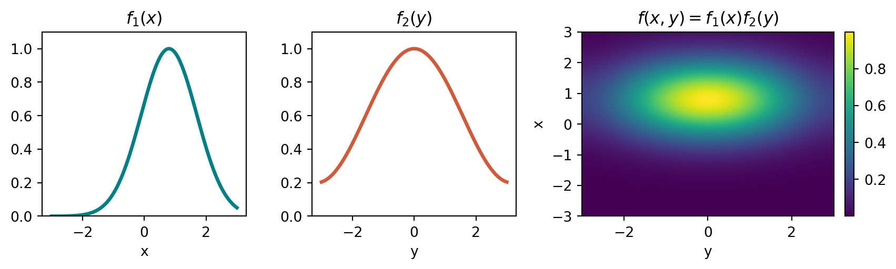
Masterclass on nonnegative Low-Rank Approximations
Lecture 1 — Introduction and matrix low-rank models, 5-9 October 2026, Univ. Trento
Jérémy E. Cohen
CNRS, CREATIS, Lyon
2026-10-01
Introduction: Regularized Low-Rank Approximations
Example NMF with hyperspectral imaging
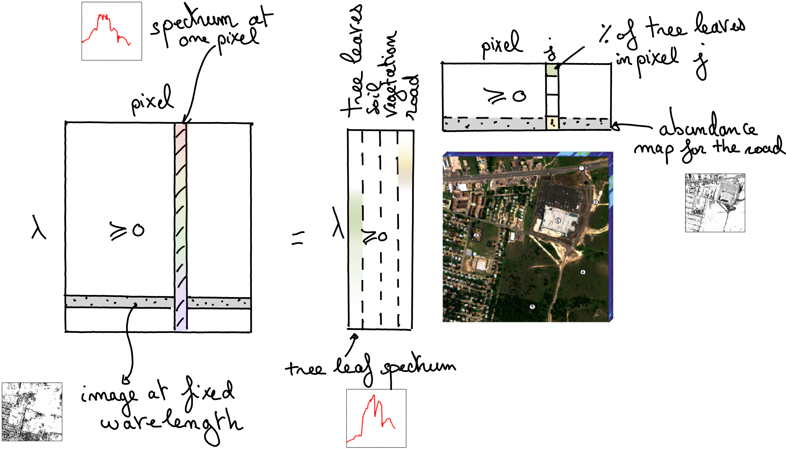
Example NMF for piano transcription (Lecture 4)
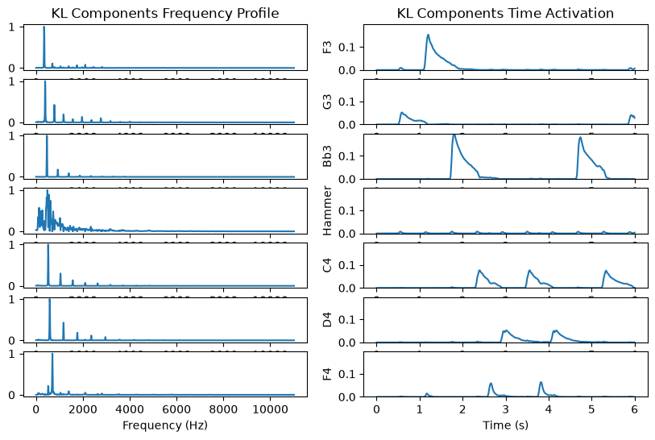
Low-rank approximations
- Workhorse methods in unsupervised ML:
- Dimensionality reduction [Tucker1966], [Golub1989], [Hotelling1992]
- Blind source separation [Harshman1970], [Paatero1997], [Lee1999]
- Formal LRA formulation: \[ \min_{U\in\mathbb{R}^{m\times r},V\in\mathbb{R}^{n\times r}} f(Y, UV^T) \]
- Rank \(r \ll m,n\)
- Typical loss function: \(f(Y, X) = \|Y-X\|_F^2\)
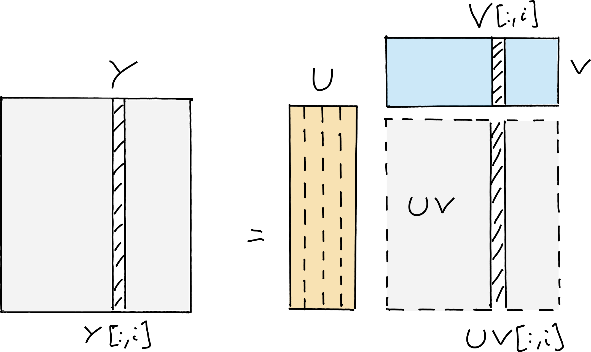
Importance of physical meaning in LRA
- Physical Interpretability:
- Factors \(U\) and \(V\) often represent physical quantities (e.g., source spectra & mixing weights)
- Reconstruction of ground-truth \((U^*, V^*)\) is an inverse problem
- Requires uniqueness for correct physical interpretation
- Indeterminacy of Unconstrained LRA:
- Solution is never unique without constraints: \[ UV^T = (UP)(P^{-1}V^T) \] for any invertible matrix \(P \in \mathbb{R}^{r\times r}\)
- Regularized LRA (rLRA): \[ \min_{U,V} f(Y, UV) + g_{U}(U) + g_{V}(V) \]
- \(g_U, g_V\) promote prior properties (smoothness, sparsity, nonnegativity)
- Restricts solution space to promote uniqueness
Independent Factor Regularization
Regularizations must apply to \(U\) and \(V\) independently. A joint penalty \(g(UV^T)\) cannot discriminate between rotated solutions \(UP(VP)^T\).
Regularized LRA
PCA (Orthogonal LRA)
- Constraint: Imposes orthogonality \(U^T U = I, V^T V = I\)
- Uniqueness: Essentially unique factors (if singular values are distinct)
- Limitation: Orthogonality is often not physically meaningful
- Impact: Estimated factors \((U,V)\) can be poor approximations of ground truth \((U^\ast, V^\ast)\)
NMF (Nonnegative LRA)
- Constraint: \(g_U, g_V\) set to indicator functions of \(\mathbb{R}_+\)
- Uniqueness: Unique under realistic conditions [Gillis2020]
- Advantage: Elementwise nonnegativity is a natural physical prior
- Use Cases: Ideal for source separation, pattern mining, spectral unmixing
Lecture 1: rLRA theory
Lecture 4: NMF for music transcription
Tensor LRA
- Multi-way Data Extension:
- Extends matrix LRA to data with \(>2\) dimensions (tensors)
- Canonical Polyadic Decomposition (CPD):
- Multilinear diagonalization into \(r\) rank-one factor matrices \((A, B, C, \dots)\)
- Inherent Identifiability:
- Uniquely identifiable without regularizations under mild conditions [Kruskal1977]
- Role of Regularization in Tensor LRA:
- Nonnegativity & sparsity still essential in practice
- Enhances interpretability and robustness against noise
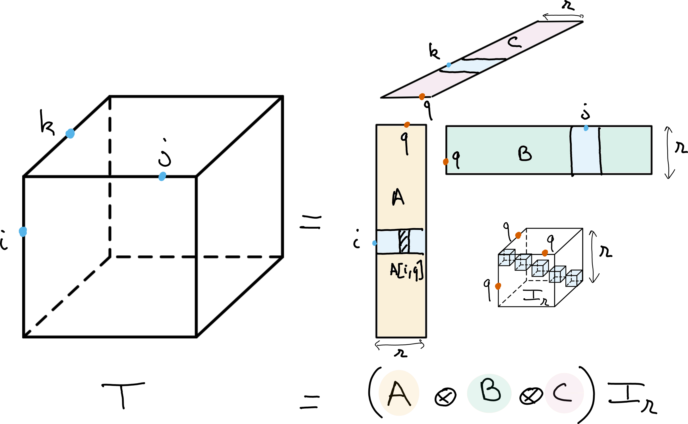
Lecture 1: rLRA theory
Lecture 5: Nonnegative Tucker decomposition for music segmentation
Optimization and LRA
- Optimization Challenges:
- Nonconvex due to factor products (\(UV^T\))
- Often nonsmooth (e.g., nonnegativity constraints)
- Multi-block optimization landscape
- Block Convexity & AO:
- Cost is often convex w.r.t. one factor while fixing others
- Nonnegative Least Squares (NNLS): \[ \min_{U\in \mathbb{R}_+^{m\times r}} \|Y - UV^T\|_F^2 \]
- Leverages convex numerical optimization in Alternating Optimization (AO) strategies

Lecture 2: NNLS algorithms theory
Lecture 3: Implementation of NNLS and NMF algorithms
Challenges in rLRA
- Numerical Optimization:
- Nonconvex, multi-block, and nonsmooth
- Integrating Side Information:
- Template libraries, downstream tasks, deep priors, sparse bases
- Multimodality & Coupled rLRA:
- Joint processing across diverse sensors (e.g., EEG + fMRI)
- Model Properties & Identifiability:
- Elusive properties (e.g., Nonnegative Tucker [Saha2025])
- Practical, verifiable guarantees are hard to obtain
- Scientific Software Ecosystem:
- Tensor software is fragmented (\(>70\) packages [Psarras2022])
- Lack of large-scale contraction support & speed/memory trade-off caching
- My HDR manuscript that contains the long version of this masterclass [link]. Some other books to check:
- Book chapter with Pierre Comon and Rasmus Bro.
- The book of Golub and Van Loan provides a complete description of matrix low-rank models.
- The recent book of Grey Ballard and Tammy Kolda provides a deeper introduction to tensor decompositions, with a focus on computational aspects.
First Lecture: regularized LRA
Matrix low-rank factorizations: linear dimensionality reduction
- Subspace View:
- \(M \in \mathbb{R}^{n_1 \times n_2}\): collection of \(n_2\) vectors in \(\mathbb{R}^{n_1}\)
- Data lies in a subspace of dimension \(r \le \min(n_1, n_2)\)
- Compact representation for data compression & unsupervised feature mining
- Mathematical Model: \[ \forall j \le n_2, \quad M[:,j] = U V^T[:,j] \]
- \(U \in \mathbb{R}^{n_1 \times r}\): basis of the subspace \(\text{col}(M)\)
- \(V^T[:,j] \in \mathbb{R}^{r}\): coordinates in basis \(U\)
- Minimal \(r\) is the rank \(\text{rank}(M)\)
- Computation & Link to SVD / PCA:
- Computed via Singular Value Decomposition (SVD)
- Centered data + truncated SVD \(\implies\) Principal Component Analysis (PCA)
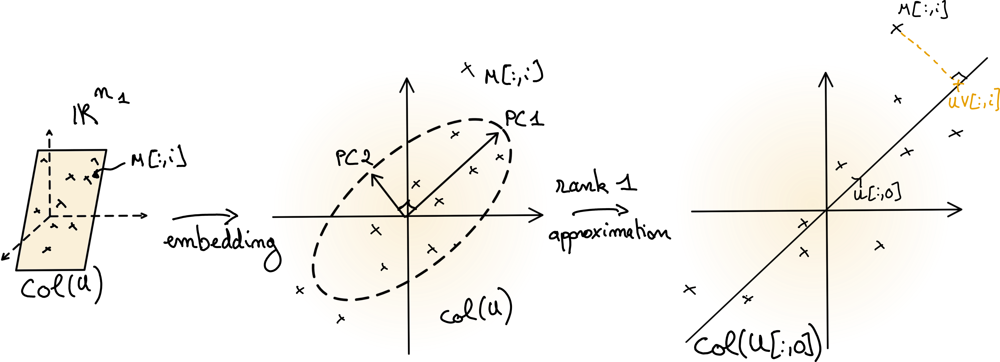
Factorization as a sum of rank-one matrices & atomic decomposition
Sum of Rank-One Matrices
- Formulation: \[ M = \sum_{q=1}^{r} U[:,q] V^T[q,:] \] \[ M[i,j] = \sum_{q=1}^{r} U[i,q]V[j,q] \]
- Both \(U \in \mathbb{R}^{n_1\times r}\) and \(V \in \mathbb{R}^{n_2\times r}\) play symmetric roles
- Compresses \(n_1 n_2\) entries into \((n_1 + n_2)r\) parameters
- Naturally extends to tensor decompositions
Atomic Decomposition View
- Formulation: \[ M = \sum_{q=1}^{r} M_q, \; \text{rank}(M_q)\leq 1 \]
- Atoms are rank-one matrices \[M_q\in\{ ab^T \mid a \in \mathbb{R}^{n_1}, b \in \mathbb{R}^{n_2}, a,b \neq 0 \}\]
- Rank measures matrix complexity
- Connects LRA directly to inverse problems
Important
\(\text{rank}(M)\) = minimal number of rank-one terms
Why are data matrices often (approximately) low-rank?
- Latent Variable Models:
- Generative models produce low-rank matrices [Udell2019]
- Separable Physical Maps:
- \(f(x,y) = f_1(x) f_2(y)\) ubiquitous in physics
- Think of quantum particle interactions, Beer-Lambert law, etc.
- Blind Source Separation:
- \(M = UV^T\): \(U\) = templates, \(V\) = mixing coefficients
- Think linear mixing model in hyperspectral imaging, audio source separation (see Lecture 4), etc.
- Also many sensing devices are aproximately linear (MRI, scanners and such)
- Key notion: linear combination of atoms (columns of \(U\))
Low-rank approximations: formulation & SVD
In the presence of noise, we are interested in low-rank approximations of a full-rank matrix.
Problem Formulations
Matrix Approximation: \[ \min_{\text{rank}(N)\leq r} \|M - N \|_F^2 \] where \(\|M-N\|_F^2 = \sum_{i,j} (M[i,j]-N[i,j])^2\)
Burer-Montero Factorization: \[ \min_{U\in\mathbb{R}^{n_1\times r}, V\in\mathbb{R}^{n_2\times r}} \|M - UV^T \|_F^2 \]
The Eckart-Young Theorem
Eckart-Young Theorem (1936)
If \(M = ASB^T\) is the SVD of \(M\), then the truncated SVD: \[ N^\ast = A[:,:r] S[:r,:r] B^T[:r,:] \] is optimal in Frobenius (and spectral) norm.
- Residual Error: \(\sum_{q=r+1}^{\min(n_1,n_2)} S[q,q]^2\)
- Unique if \(r\)-th singular value is distinct
- Remark: one of the few non-convex problems with a closed-form global solution
Identifiability & Robustness
- Identifiability?
- No! \(M = U_1 V_1^T = U_2 V_2^T \implies U_1 = U_2 Q\) for invertible \(Q \in \mathbb{R}^{r\times r}\)
- Rotation ambiguity requires additional constraints/regularization
- Robustness to Noise?
- Directly governed by the condition number of \(M\)
Important
Regularized LRA = LRA + constraints/priors to promote uniqueness.
Nonnegative Matrix Factorization
- Definition & Model: \[ \text{Find } W \in \mathbb{R}_+^{n_1\times r}, H \in \mathbb{R}_+^{n_2\times r} \quad \text{s.t.} \quad M \approx WH^T \]
- Physical Motivation:
- Nonnegativity represents concentrations, spectra, probabilities, power, etc.
- Fitting NMF:
- NP-hard problem [Vavasis2010]
- Solved via non-convex optimization (e.g., HALS, MU, CCD)
- Rank Selection:
- Truncated SVD deflation does not apply to NMF
- Rank \(r\) must be pre-specified or tuned
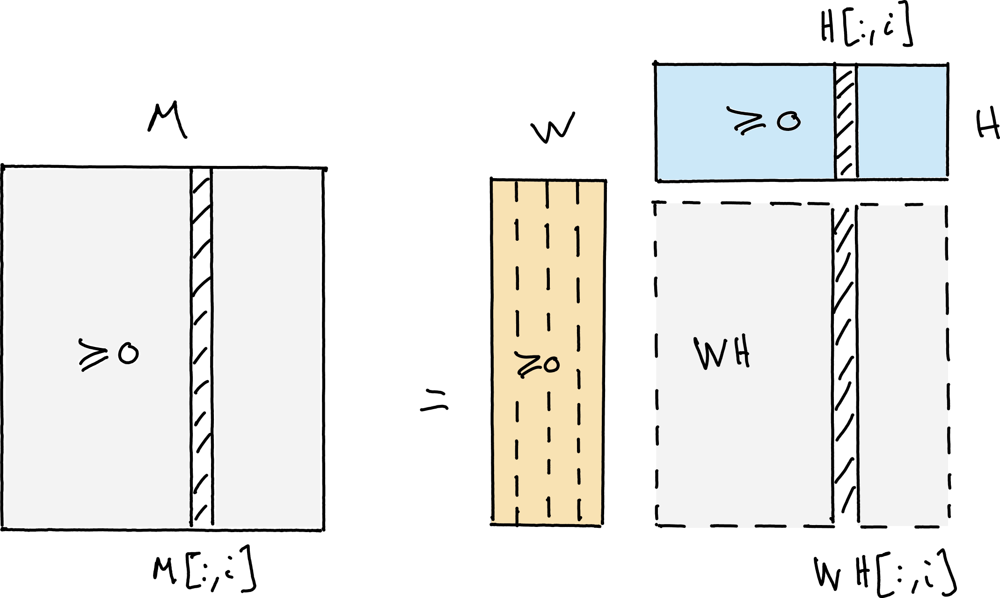
History of NMF
Early ideas: nonnegative matrix factorization is rooted in older work on positive matrix decompositions and chemometrics, where nonnegativity was a natural physical assumption.
1990s: the modern NMF formulation emerged through the connection with source separation and latent-variable models; Lee and Seung popularized the problem in the machine learning community. [Lee & Seung1999]
2000s: NMF became a standard tool for document clustering, hyperspectral unmixing, and image analysis, with the famous multiplicative updates and the rise of interpretable factor models.
2010s–present: the field broadened to regularized NMF, sparse/volume-constrained variants, separable NMF, and tensor extensions, driven by identifiability and scientific applications.
NMF is now seen as a canonical example of a regularized low-rank model with strong physical meaning.
Applications of NMF
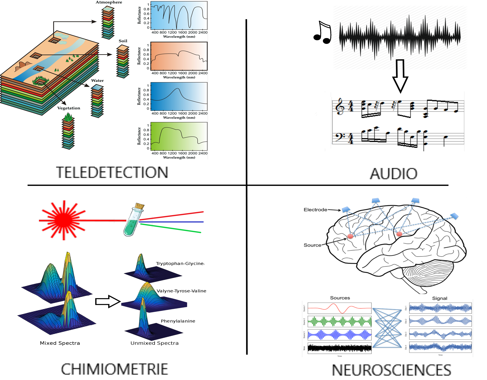
Geometric interpretation and identifiability of exact NMF
The columns of \(M\) must lie inside the cone generated by the columns of \(W\):
\[ \mathcal{C}(W)=\{Wx:x\geq 0\}. \]
Different cones may cover the same data, so exact NMF is not generally unique.
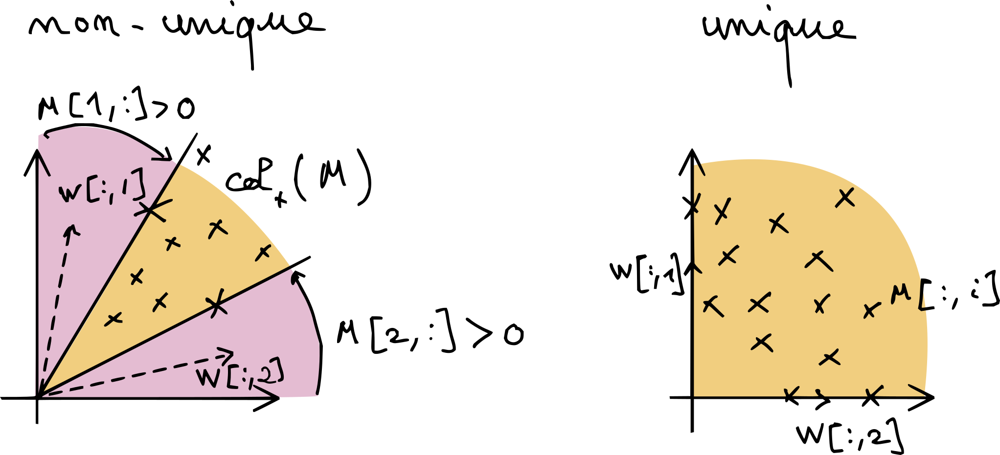
Simplex View & Identifiability
- Projection onto the unit simplex (e.g. \(\ell_1\) normalization)
- Data lives in a polytope inside the simplex
- Uniqueness condition: Data points must touch the boundaries of the simplex
- Sufficiently Scattered Condition: Guarantees uniqueness if columns of \(H^T, W\) spread widely [Gillis2020]
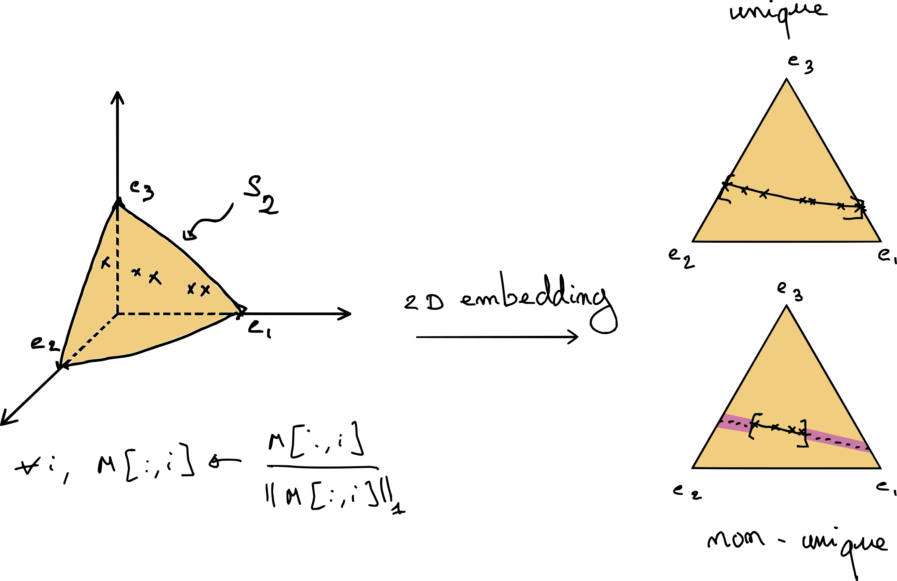
Regularized NMF: separable NMF
- Pure-Pixel / Pure-Data Assumption:
- Columns of \(W\) are selected directly from columns of \(M\): \[ M = M[:,\mathcal{K}] H^T \quad \text{with } |\mathcal{K}| = r \]
- Advantages:
- Drastically restricts solution space
- Solvable in polynomial time (e.g., Successive Nonnegative Projection Algorithm - SNPA [Gillis2014])
- Excellent initialization for other algorithms
- High interpretability (extracts real data templates)
- Limitation:
- Fails if no “pure” data points exist (all data points are mixtures)
- Sensitive to noise and outliers

Note
- Rank-two exact separable NMF can be computed in closed form
- Rank-one exact separable NMF is computed through SVD by the Perron-Frobenius theorem
Sparse and Minimum-Volume NMF
Sparse NMF
- Formulation (\(\ell_1\) regularization): \[ \min_{W \ge 0, H \ge 0} \|Y - WH^T\|_F^2 + \lambda \left( \|W\|_F^2 + \|H\|_1 \right) \]
- Mechanism & Benefit:
- Pushes entries in \(W\) and/or \(H\) towards zero
- Drives abundance/coefficients \(H\) towards the simplex boundary
- Restores uniqueness when standard NMF is unidentifiable
Minimum-Volume NMF
- Concept:
- Fits cone \(\mathcal{C}(W)\) tightly around the data hull
- Relaxes the separability assumption (works without pure pixels)
- Objective:
- Minimizes volume of \(W\), e.g., via \(\log\det(W^T W)\)
- Maximizes volume of abundances \(H^T\)
Fitting rLRA & NMF: Optimization Frameworks
Optimization Paradigms
- Alternating Optimization (AO):
- Block Coordinate Descent: updates one factor while keeping others fixed
- Transforms non-convex joint problem into a sequence of convex subproblems
- Most widely used framework for matrix & tensor rLRA
- All-at-Once Optimization:
- Joint updates of \((W, H)\) simultaneously
- Gradient descent, Quasi-Newton, projected gradient methods
The Core Subproblem: NNLS
- Nonnegative Least Squares (NNLS):
- Fixing \(H\) yields a convex subproblem in \(W\): \[ \min_{W \ge 0} \|M - WH^T\|_F^2 \]
- Fundamental building block for NMF & nonnegative tensor factorizations
Coming up in Lecture 2
The NNLS subproblem and its algorithms (HALS, MU, Active Set, PG) will be covered in detail in Lecture 2.
Software Ecosystem for NMF
Scikit-Learn
- Industry standard in Python
- Implements Multiplicative Updates (MU) & Coordinate Descent (CCD)
- Supports sparsity constraints (\(\ell_1 / \ell_2\))
- Fast & well-maintained
Nimfa
- Dedicated NMF toolbox in Python
- Implements many NMF variants (Bayesian, graph-regularized, etc.)
- Highly flexible
- Unmaintained since 2019
TensorLy
- Multi-way array library
- Implements MU and HALS (Hierarchical Alternating Least Squares)
- Generic NNLS solver building blocks
- CPU/GPU backends (NumPy, PyTorch, CuPy)
Simulation: Standard NMF vs Ground Truth
- Rank-2 Exact NMF Data:
- \(M = W^* H^{*T}\) (\(n_1=3, n_2=50, r=2\))
- Standard NMF Output:
- Low fitting error, but fails to recover true \(W\) due to non-uniqueness
import numpy as np
from tensorly.decomposition import non_negative_parafac_hals
rng = np.random.default_rng(5)
W_true = rng.random((3, 2))
H_true = rng.random((50, 2))
M = W_true @ H_true.T
# Fit NMF with TensorLy (HALS)
out = non_negative_parafac_hals(M, 2, init="svd", n_iter_max=100)
We = out[1][0]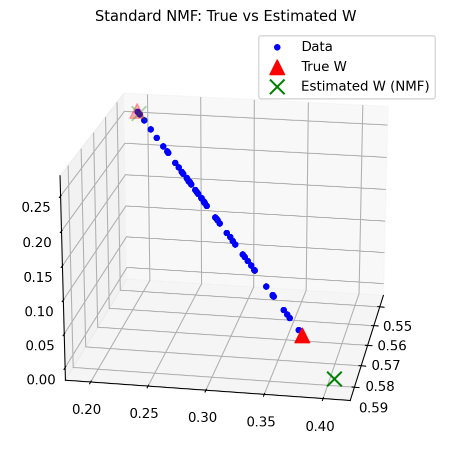
Simulation: Recovering Ground Truth with Separable NMF (SNPA)
Tensors
- Multiway arrays: tensors extend matrices to more than two modes
- Matrix: \(M[i,j]\)
- Third-order tensor: \(T[i,j,k]\)
- Modes are the different dimensions of a tensor
- Order \(d\) is the number of modes
- Example: \(T \in \mathbb{R}^{n_1 \times n_2 \times n_3}\) is a third-order tensor
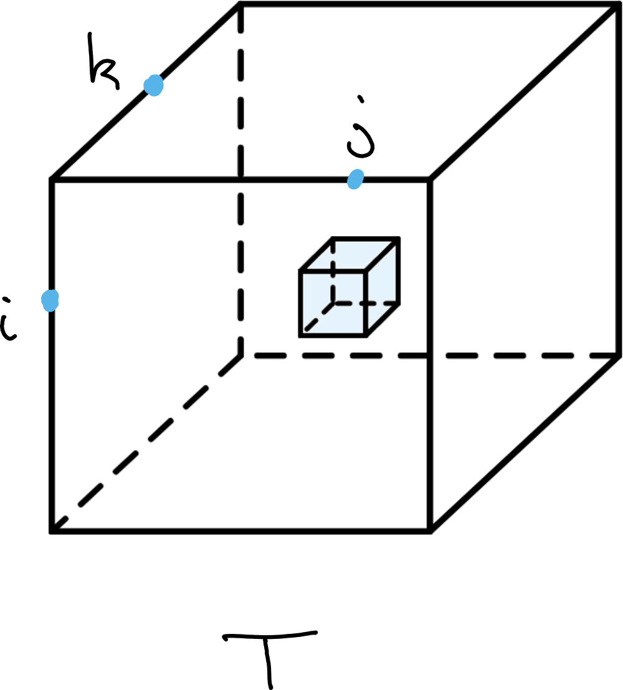
Tensors: several compatible viewpoints
- Multiway array: a natural representation for data, tensors are elements of \(\mathbb{R}^{n_1 \times n_2 \times \cdots \times n_d}\).
- Tensor-space vector: an element of \[ E_1 \otimes \cdots \otimes E_d \] where \(E_i\) are vector spaces such as \(\mathbb{R}^{n_i}\).
- Multilinear map or form: a higher-order generalization of matrices as linear operators.
- Higher-order moments: common in statistics and machine learning
Why ??
- Different fields use different viewpoints
- The viewpoints are mathematically compatible, but emphasize different operations
- For tensor LRA, start from the matrix case and generalize
- A tensor-specific challenge: efficient high-order contractions [Bientinesi2022]
The tensor product
From multilinear to linear
- Given vector spaces \(E\) and \(F\), the tensor product combines \(x \in E\) and \(y \in F\) into \(x \otimes y\)
- It creates a space that contains interactions between the two spaces
- Every bilinear map \(u\) can be represented by a linear map \(w_u\): \[ u(x,y) = w_u(x \otimes y) \]
- This is the universality property of the tensor product [Schwartz1975]
Tensor-product space
- The tensor-product space is generated by products \(e_i \otimes f_j\) where \(\{e_i\}_i\) and \(\{f_j\}_j\) are bases of \(E\) and \(F\), respectively.
- In finite dimensions: \[ \dim(E \otimes F) = \dim(E)\dim(F) \]
- The construction generalizes to any order \(d\): \[ E_1 \otimes \cdots \otimes E_d \]
Tensor products in practice
Outer product representation
- Identify \(E\) and \(F\) with Euclidean spaces
- The tensor product becomes the outer product: \[ (x \otimes y)[i,j] = x[i]y[j] \] \[ x \otimes y = xy^T \]
- For instance, for matrices, the linear map associated with the inner product is the trace: \[ \langle x,y \rangle = \operatorname{Tr}(xy^T) \]
Operators and Kronecker products
- Linear operators acting on tensor spaces form tensor-product spaces too [Hackbusch2012]
- The Kronecker product builds this tensor space of operators and acts modewise: \[ (A \otimes B)(x \otimes y) = Ax \otimes By \]
Tip
It is possible to perform matrix and tensor LRA with the Kronecker product instead of the outer product!
Rank-one tensors are generators of the full tensor space
Rank-one tensors
- A tensor of the form \[ x \otimes y \] is called rank one
- Rank-one tensors are the elementary building blocks of tensor spaces
- Because tensor spaces are vector spaces, finite sums remain tensors: \[ T = \sum_{q=1}^{p} x_q \otimes y_q \]
Generating the tensor space
- In finite dimensions, products of basis vectors generate the whole space: \[ \{e_i \otimes f_j\}_{i,j} \text{ is a basis of } E \otimes F \]
- Therefore, every tensor can be expressed as a finite sum of rank-one tensors
- This is the tensor analogue of expanding a matrix in the canonical basis
Rank-one tensors and tensor rank
Not every tensor is rank one
- A sum of rank-one tensors is generally not rank one
- Matrix example: \[ e_1 f_1^T + e_2 f_2^T \]
- This matrix cannot be written as a single outer product \(xy^T\)
- The same phenomenon occurs in higher-order tensor spaces
Tensor rank
- Tensor rank is the smallest number of rank-one terms needed: \[ \operatorname{rank}(T) = \min \left\{p : T = \sum_{q=1}^{p} x_q \otimes y_q \right\} \]
- For matrices, this recovers the usual matrix rank
- For higher-order tensors, this definition leads naturally to the CP decomposition
Canonical Polyadic Decomposition
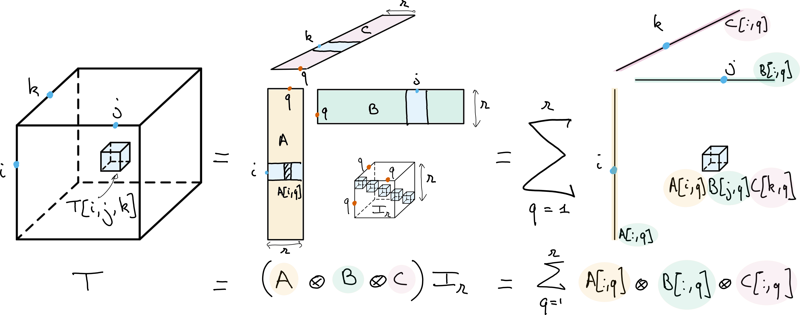
- CPD / PARAFAC represents a tensor as a sum of rank-one tensors
- Factor matrices \(A=[a_1,\ldots,a_r]\), \(B\), and \(C\) collect the rank-one components
- Kruskal notation: \[ T = \lbrack\!\lbrack A,B,C \rbrack\!\rbrack \]
- Equivalent operator notation: \[ T = (A\otimes B\otimes C)I_r \] \[ T = A\times_1 B\times_2 C\times_3 I_r \]
CP components and their ambiguities
For a third-order tensor, the CP model expands entrywise to
\[ T[i,j,k]=\sum_{q=1}^{r}A[i,q]B[j,q]C[k,q]. \]
Each component contributes one separable pattern across all three modes. It can be rescaled without changing the tensor:
\[ a_q\otimes b_q\otimes c_q = (\alpha a_q)\otimes(\beta b_q)\otimes\left((\alpha\beta)^{-1}c_q\right). \]
Components may also be permuted, so uniqueness is understood up to scaling and permutation.
Matrix versus tensor case
- For matrices, CPD reduces to an exact factorization \(M = XY^T\)
- Matrix factorizations are never unique and can be computed efficiently with SVD
- For tensors of order greater than two, CPD can be identifiable under mild assumptions [Kruskal1977]
Why CPD matters
- A unique decomposition can make factors physically interpretable
- CPD may avoid additional regularization for identifiability
- Applications include chemometrics, telecommunications, imaging, and audio [Bro1998] [Sidiropoulos2000] where interpretability matters
- Computation can nevertheless be highly challenging
Matrix LRA has a rotation ambiguity
For any invertible \(Q \in \mathbb{R}^{r\times r}\),
\[ M = AB^T = (AQ)(BQ^{-T})^T. \]
No unique basis for either factor.
CPD couples the tensor slices
For a third-order tensor, every slice shares the same factors:
\[ T[:,:,k] = A\operatorname{Diag}(C[k,:])B^T, \qquad k=1,\ldots,n_3. \]
The shared factors couple the slices, imposing more structure than a separate matrix factorization of each slice.
Two slices can reveal the factors
Under suitable full-rank and distinct-eigenvalue assumptions, for two slices,
\[ T[:,:,1]T[:,:,2]^{\dagger} = A\operatorname{Diag}\left(\frac{C[:,1]}{C[:,2]}\right)A^{\dagger}. \]
Distinct diagonal entries can determine the columns of \(A\) up to scaling and permutation. This illustrates why tensor structure can make CPD identifiable.
Fitting CP with alternating least squares
Given a tensor \(T\), choose the rank \(r\) and fit a sum of \(r\) rank-one terms:
\[ \min_{A,B,C}\|T-\lbrack\!\lbrack A,B,C\rbrack\!\rbrack\|_F^2. \]
The objective is nonconvex jointly, but quadratic in each factor when the other two are fixed. Alternating Least Squares (ALS) cycles through these block updates:
- Each block update is a least-squares problem. \[ \min_{A}\|T_{[1]}- A(B \odot C)^T\|_F^2 = T_{[1]}(B\odot C)(B^TB \ast C^TC)^{-1} \] where \(\odot\) is the so-called Khatri-Rao product and \(T_{[1]}\) is the mode-1 unfolding of \(T\).
- Update \(A\), \(B\), and \(C\) in turn until a stopping criterion is met.
- The high-level method is simple; efficient tensor contractions and caching require care.
- Other approaches include gradient, preconditioned, and second-order methods.
Approximate CP can be ill-posed
The set of tensors with rank at most \(r\) is not closed for tensors of order three or higher.
- A best rank-\(r\) approximation may therefore fail to exist [Hillar2013].
- ALS can exhibit long periods of slow progress, called swamps.
- Components may grow without bound while canceling in their sum.
- Regularization can improve both well-posedness and interpretability.
Nonnegative CP decomposition
Constrain each factor to be elementwise nonnegative:
\[ \min_{A,B,C\geq 0}\|T-\lbrack\!\lbrack A,B,C\rbrack\!\rbrack\|_F^2. \]
- Alternating updates reduce to nonnegative least-squares subproblems (ANLS). \[ \min_{A\geq 0}\|T_{[1]}- A(B \odot C)^T\|_F^2 \]
- Nonnegativity prevents cancellation between components and ensures a best approximation exists.
- Again an NNLS problem, no closed-form solution.
- The NNLS algorithms from Lecture 2 are the optimization building blocks.
Tucker decomposition compresses each mode
Tucker decomposition projects a tensor onto a lower-dimensional space in every mode and stores interactions in a smaller core tensor.
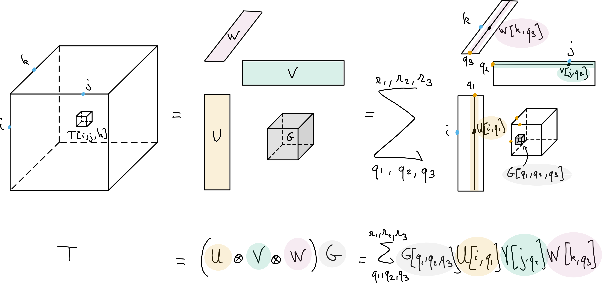
- Tucker decomposition of a data tensor \(T\), with multilinear ranks \(r_1\), \(r_2\) and \(r_3\).
- The Tucker decomposition can be viewed as a multilinear dimensionality reduction technique, with orthogonal bases \(U\), \(V\) and \(W\) respectively spanning the columns, rows and fibers of the tensor.
- The core tensor \(G\) stores the coefficients into a tensor of size \(r_1\times r_2\times r_3\).
Tucker model and compression cost
For a third-order tensor \(T\in\mathbb{R}^{n_1\times n_2\times n_3}\),
\[ T=\lbrack\!\lbrack U,V,W;G\rbrack\!\rbrack = G\times_1 U\times_2 V\times_3 W. \]
The model stores
\[ n_1r_1+n_2r_2+n_3r_3+r_1r_2r_3 \]
parameters, which can be much smaller than \(n_1n_2n_3\) when the multilinear ranks are small.
Tucker has rotation ambiguities
- A change of basis in a mode can be absorbed into the core tensor.
- Tucker factors are therefore not unique without further constraints.
- Orthogonality is common; HOSVD provides a standard orthogonal approximation [DeLathauwer2004].
- Tucker is often used as a dimensionality-reduction format rather than an identifiable source model.
CP and Tucker encode different structure
CP
\[ T=\sum_{q=1}^{r}a_q\otimes b_q\otimes c_q \]
- One shared component index across all modes
- No free core tensor
- Rank \(r\) is the number of rank-one terms
Tucker
\[ T=G\times_1 U\times_2 V\times_3 W \]
- A smaller core stores interactions between mode-wise bases
- Separate multilinear ranks \((r_1,r_2,r_3)\)
- Flexible compression, with basis-change ambiguities
Fitting Tucker with HOSVD
- Unfold the tensor along each mode to form three matrices.
- Compute an SVD of each unfolding; retain its leading left singular vectors as a mode basis.
- Project the tensor onto these bases to obtain the core.
- Truncating each mode gives a practical multilinear-rank approximation.
Fitting Nonnegative Tucker
Impose elementwise nonnegativity on the factor matrices and core, then minimize the reconstruction error:
\[ \min_{U,V,W,G\geq 0} \left\|T-G\times_1 U\times_2 V\times_3 W\right\|_F^2. \]
- Nonnegative factors can represent additive components such as abundances or intensities.
- With multilinear ranks fixed, alternating updates solve a NNLS subproblem for one block at a time. \[ \min_{U\geq 0} \|T_{[1]} - U G_{[1]} (V \otimes W)^T\|_F^2 \]
Identifiability remains open for Nonnegative Tucker
- Nonnegativity alone does not resolve every Tucker rotation ambiguity.
- Identifiability conditions are more elusive than for CPD and remain an active topic.
- Recent work has made progress, but practical guarantees are still limited [Saha2025].
Take-home: choose the model and its assumptions
- Matrix LRA in general is not interpretable but easy to compute.
- Constraints and regularization encode prior knowledge, but their guarantees depend on the model.
- NMF trades a closed-form solution for nonnegative, potentially interpretable factors.
- CPD can be identifiable under suitable conditions; Tucker offers flexible multilinear compression.
- Nonnegative Tucker may be identifiable, but the conditions are still unclear.
Lecture 1: rLRA theory
Lecture 2: NNLS algorithms theory
Lecture 3: NNLS and NMF/NTD algorithms implementation
Lecture 4: Application of NMF to automatic music transcription
Lecture 5: Application of NTD for music stucture estimation
Masterclass — Nonnegative LRA